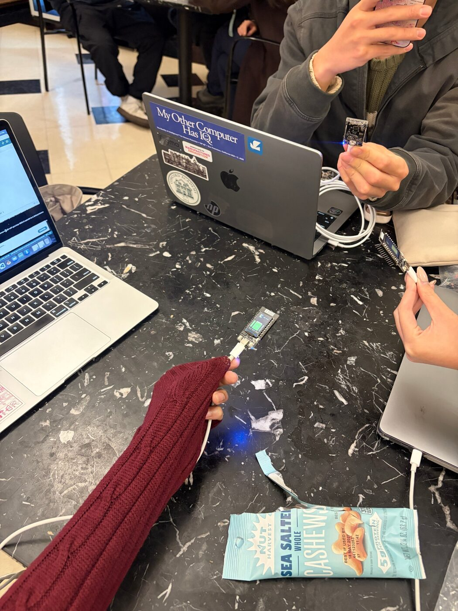
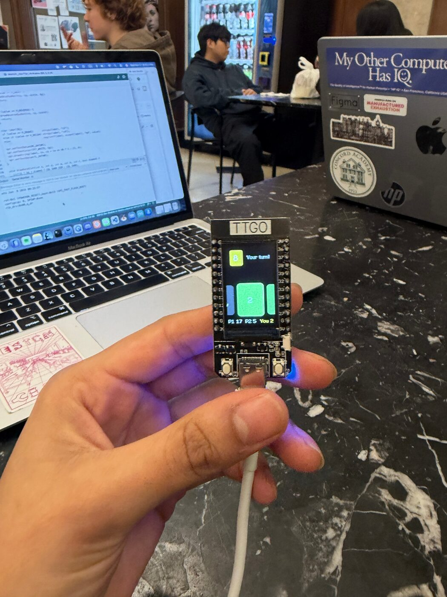
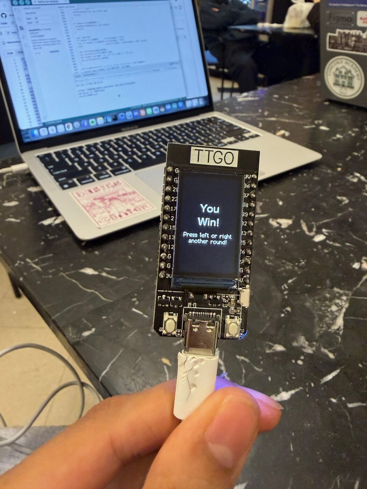
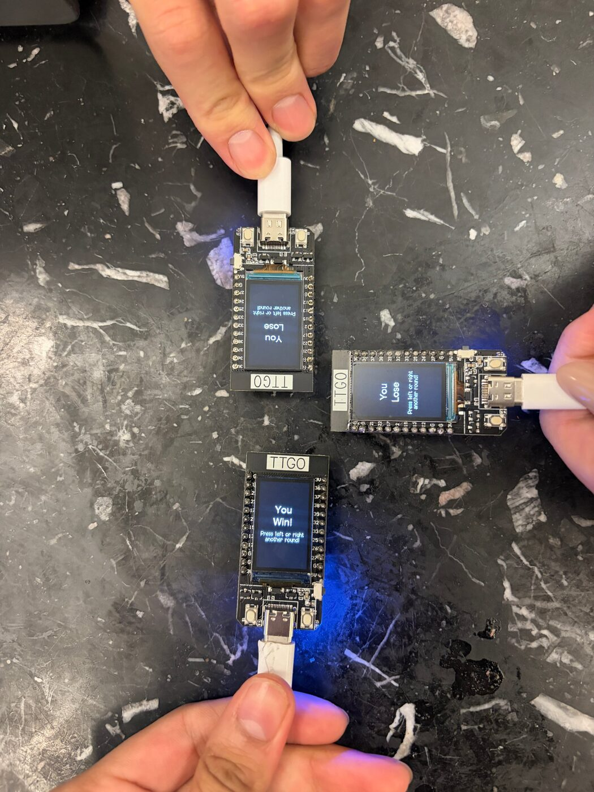
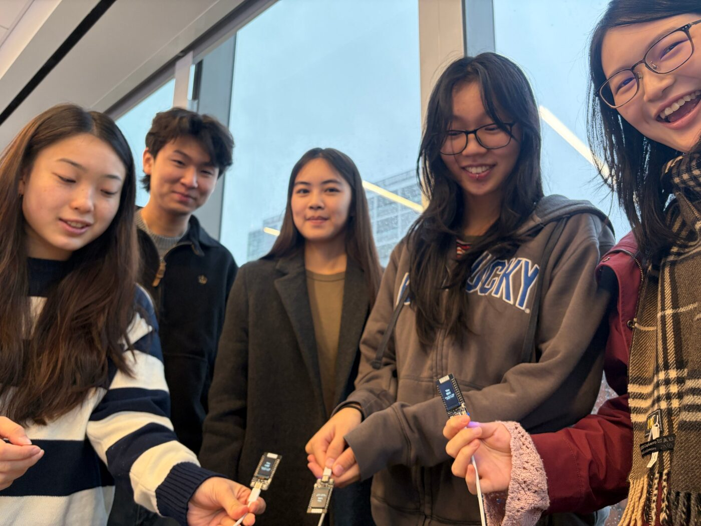
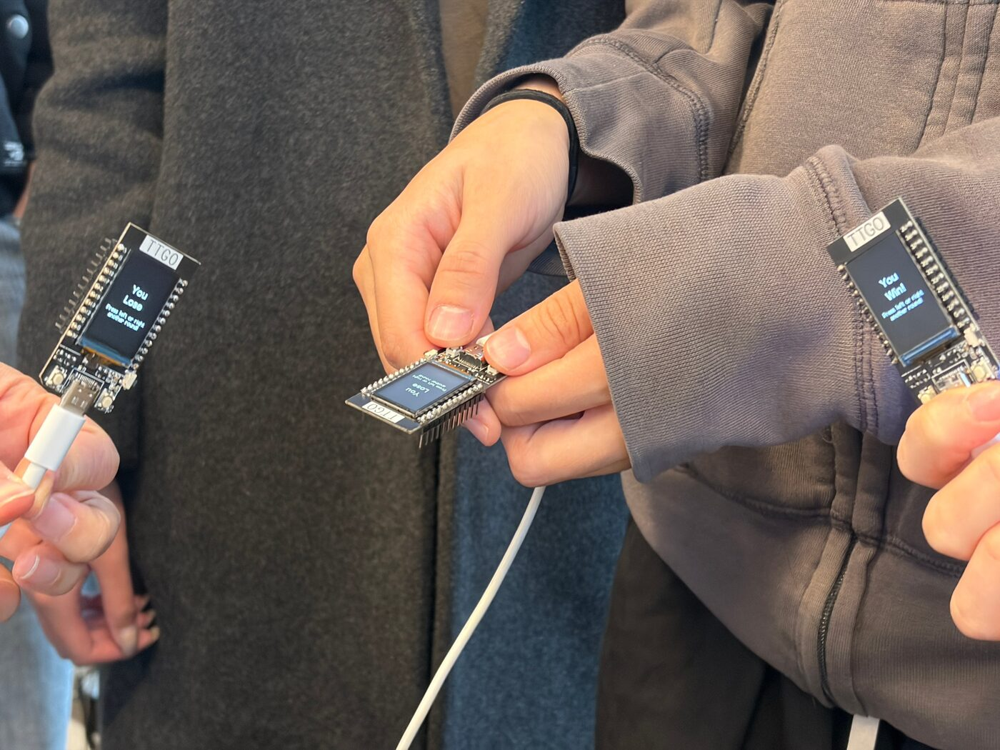
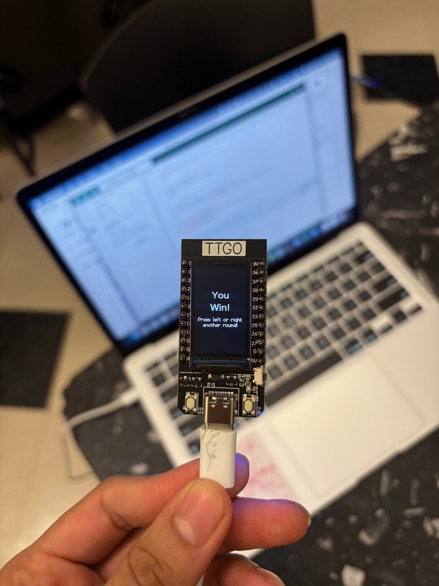
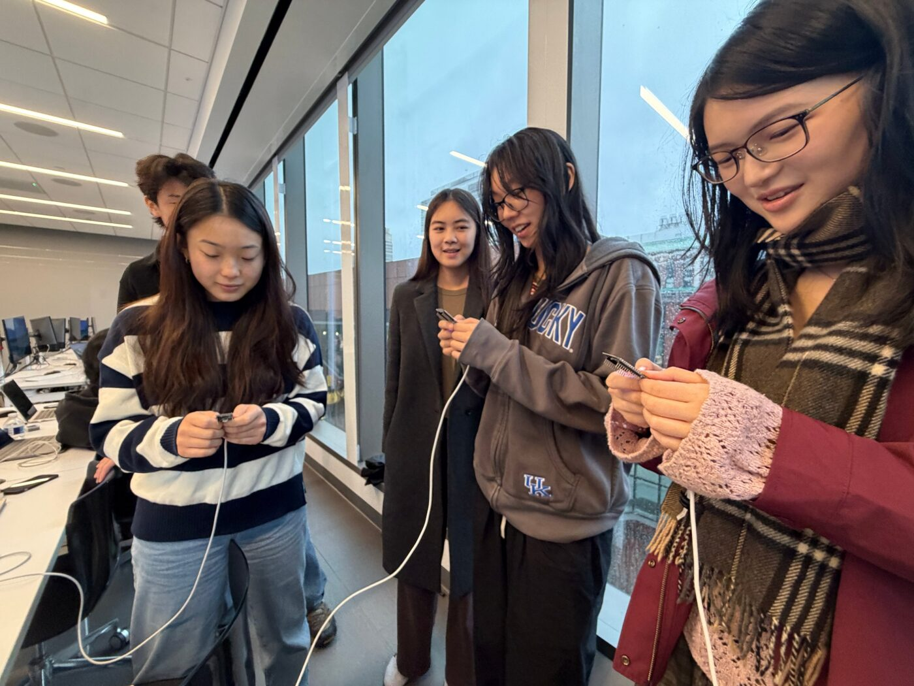

Artistic Inspiration / Vision
For our distributed communications project, we wanted to create a fun game of UNO. We brainstormed a few different ideas, like Among Us, Wii Sports, and Mario Kart, but ended up going with UNO due to its simple implementation of game logic. Since we were a team of three, we chose UNO because it fits within the constraint of being multiplayer. To create the game logic, we followed the classic rules of UNO: The player to the left of the dealer plays first. Play passes to the left to start. Match the top card on the DISCARD pile either by number, color, or word. For example, if the card is a Green 7, you must play a Green card or any color 7. Or, you may play any Wild card or a Wild Draw 4 card. If you don't have anything that matches, you must pick a card from the DRAW pile. If you draw a card you can play, play it. Otherwise, play moves to the next person. Before playing your next-to-last card, you must say "UNO." If you don't say UNO and another player catches you with just one card before the next player begins their turn, you must pick FOUR more cards from the DRAW pile. If you are not caught before the next player either draws a card from the DRAW pile or plays a card from their hand, you do not have to draw the extra cards. Once a player plays their last card, the hand is over.
We then had to assign values to the cards, with a deck of 112 cards: 76 numbered cards, 8 skip cards, 8 reverse cards, 8 draw 2 cards, 4 wild cards, and 4 wild draw 4 cards.

Design Decisions
I enjoy the process of UI design, so I drew out a sketch on my iPad of how the game would look. I split the screen into two sections: the bottom part is where I drew the hand of cards each player can view, and the top is where I drew the pile of cards that all the players can see. I gave the UI sketch to Yuntee, who then prototyped the design on Figma. This was one of the key design decisions we made.

Technical Implementation
This was my first time working as a team in a technical setting where we all had to share the same code, which meant any change that any of us made, the others had to make as well. So being communicative and specific about what we were doing when debugging and testing was helpful. We ultimately decided to keep everything in one file, for the sake of simplicity and convenience. We took the rules of UNO and wrote a simple game pseudocode algorithm, and then coded the backend game logic using C++.
void showBanner(const char *text) {
strncpy(banner, text, sizeof(banner) - 1);
banner[sizeof(banner) - 1] = 0;
bannerUntil = millis() + 1400;
needsRedraw = true;
}
bool inGame(uint8_t player) { return game.mask & (1 << player); }
int countBits(uint8_t mask) {
int n = 0;
for (int i = 0; i < MAX_PLAYERS; i++) if (mask & (1 << i)) n++;
return n;
}
uint8_t liveMask() {
uint8_t mask = 1 << PLAYER_ID;
for (int i = 0; i < MAX_PLAYERS; i++) {
if (everHeard[i] && millis() - lastHeard[i] < PLAYER_TIMEOUT) mask |= 1 << i;
}
return mask;
}
uint8_t nextPlayer(uint8_t from, int8_t dir, uint8_t mask) {
for (int i = 1; i <= MAX_PLAYERS; i++) {
uint8_t p = (from + dir * i + MAX_PLAYERS * 2) % MAX_PLAYERS;
if (mask & (1 << p)) return p;
}
return from;
}
bool isNewer(const GameState &a, const GameState &b) {
if (a.round != b.round) return a.round > b.round;
if (a.nonce != b.nonce) return a.nonce > b.nonce;
return a.seq > b.seq;
}
Card randomCard() {
Card c;
int r = random(108);
if (r < 76) { c.color = random(4); c.value = (random(19) + 1) / 2; } // one 0, two each of 1-9
else if (r < 84) { c.color = random(4); c.value = V_SKIP; }
else if (r < 92) { c.color = random(4); c.value = V_REVERSE; }
else if (r < 100) { c.color = random(4); c.value = V_DRAW2; }
else if (r < 104) { c.color = WILD; c.value = V_WILD; }
else { c.color = WILD; c.value = V_WILD4; }
return c;
}
bool hasColor(uint8_t color) {
for (int i = 0; i < handCount; i++) if (hand[i].color == color) return true;
return false;
}
bool isPlayable(Card c) {
if (c.value == V_WILD4) return !STRICT_WILD4 || !hasColor(game.topColor);
return c.color == WILD || c.color == game.topColor || c.value == game.topValue;
}
void sortHand() {
for (int i = 1; i < handCount; i++) {
Card c = hand[i];
int j = i - 1;
while (j >= 0 && (hand[j].color > c.color ||
(hand[j].color == c.color && hand[j].value > c.value))) {
hand[j + 1] = hand[j];
j--;
}
hand[j + 1] = c;
}
}
void drawCards(int n) {
for (int i = 0; i < n && handCount < MAX_HAND; i++) hand[handCount++] = randomCard();
sortHand();
}
void removeCard(uint8_t index) {
for (int i = index; i < handCount - 1; i++) hand[i] = hand[i + 1];
handCount--;
}
void selectFirstPlayable() {
selected = handCount;
for (int i = 0; i < handCount; i++) {
if (isPlayable(hand[i])) { selected = i; break; }
}
}
void onReceive(const RecvInfo *info, const uint8_t *data, int len) {
if (len != sizeof(Message)) return;
Message msg;
memcpy(&msg, data, sizeof(msg));
if (msg.teamId != TEAM_ID) return;
if (msg.playerId >= MAX_PLAYERS) return;
if (msg.playerId == PLAYER_ID) return;
portENTER_CRITICAL(&inboxMux);
inbox[msg.playerId] = msg;
inboxFull[msg.playerId] = true;
portEXIT_CRITICAL(&inboxMux);
}
void setupEspNow() {
WiFi.mode(WIFI_STA);
if (esp_now_init() != ESP_OK) {
uiError("ESP-NOW init failed");
while (true) delay(1000);
}
esp_now_register_recv_cb(onReceive);
esp_now_peer_info_t peer = {};
memcpy(peer.peer_addr, broadcastAddress, 6);
peer.channel = 0;
peer.encrypt = false;
esp_now_add_peer(&peer);
}
void sendState() {
Message msg;
msg.teamId = TEAM_ID;
msg.playerId = PLAYER_ID;
msg.handCount = handCount;
msg.game = game;
esp_now_send(broadcastAddress, (uint8_t *)&msg, sizeof(msg));
lastHeartbeat = millis();
}
void processInbox() {
for (int i = 0; i < MAX_PLAYERS; i++) {
if (!inboxFull[i]) continue;
Message msg;
portENTER_CRITICAL(&inboxMux);
msg = inbox[i];
inboxFull[i] = false;
portEXIT_CRITICAL(&inboxMux);
everHeard[i] = true;
lastHeard[i] = millis();
if (handCounts[i] != msg.handCount) {
handCounts[i] = msg.handCount;
needsRedraw = true;
}
if (isNewer(msg.game, game)) adoptState(msg.game);
}
}
void onMyTurnStart() {
pickingColor = false;
drewThisTurn = false;
if (game.penalty > 0) {
char text[24];
snprintf(text, sizeof(text), "+%d! SKIPPED", game.penalty);
drawCards(game.penalty);
showBanner(text);
GameState next = game;
next.seq++;
next.penalty = 0;
next.turn = nextPlayer(PLAYER_ID, game.dir, game.mask);
commitState(next);
return;
}
selectFirstPlayable();
}
void adoptState(const GameState &next) {
bool newDeal = (next.round != game.round || next.nonce != game.nonce);
bool wasOver = (game.phase == OVER);
game = next;
if (newDeal) {
handCount = 0;
selected = 0;
pickingColor = false;
drewThisTurn = false;
banner[0] = 0;
if (game.phase == PLAYING && inGame(PLAYER_ID)) drawCards(START_HAND);
}
if (game.phase == OVER && (!wasOver || newDeal)) gameOverAt = millis();
if (selected > handCount) selected = handCount;
needsRedraw = true;
if (game.phase == PLAYING && game.turn == PLAYER_ID && inGame(PLAYER_ID)) onMyTurnStart();
}
void commitState(const GameState &next) {
adoptState(next);
sendState();
}
void startGame() {
GameState next;
next.round = game.round + 1;
next.nonce = random(1, 65535);
next.seq = 1;
next.phase = PLAYING;
next.mask = liveMask();
next.dir = 1;
next.turn = nextPlayer(PLAYER_ID, 1, next.mask);
next.penalty = 0;
next.winner = 0;
Card top;
do { top = randomCard(); } while (top.value > 9);
next.topColor = top.color;
next.topValue = top.value;
commitState(next);
}
void tryStartGame() {
if (game.phase == OVER && millis() - gameOverAt < 1500) return;
if (countBits(liveMask()) < 2) { showBanner("NEED 2+ PLAYERS"); return; }
startGame();
}
// Sends every player back to the start (lobby) screen.
void resetToLobby() {
GameState next = game;
next.round = game.round + 1;
next.nonce = random(1, 65535);
next.seq = 1;
next.phase = LOBBY;
next.mask = 0;
next.turn = 0;
next.dir = 1;
next.penalty = 0;
next.winner = 0;
commitState(next);
}
void finishPlay(uint8_t index, uint8_t color) {
Card c = hand[index];
removeCard(index);
pickingColor = false;
drewThisTurn = false;
GameState next = game;
next.seq++;
next.topColor = color;
next.topValue = c.value;
next.penalty = 0;
uint8_t after = nextPlayer(PLAYER_ID, game.dir, game.mask);
if (handCount == 0) {
next.phase = OVER;
next.winner = PLAYER_ID;
} else if (c.value == V_SKIP) {
next.turn = nextPlayer(after, game.dir, game.mask);
} else if (c.value == V_REVERSE) {
next.dir = -game.dir;
next.turn = (countBits(game.mask) == 2) ? (uint8_t)PLAYER_ID
: nextPlayer(PLAYER_ID, next.dir, game.mask);
} else if (c.value == V_DRAW2) {
next.turn = after;
next.penalty = 2;
} else if (c.value == V_WILD4) {
next.turn = after;
next.penalty = 4;
} else {
next.turn = after;
}
commitState(next);
}
void playSelected() {
Card c = hand[selected];
if (drewThisTurn && selected != drawnIndex) { showBanner("ONLY DRAWN CARD"); return; }
if (!isPlayable(c)) {
showBanner(c.value == V_WILD4 ? "+4 NOT ALLOWED" : "CAN'T PLAY THAT");
return;
}
if (c.color == WILD) {
pendingWild = selected;
pickingColor = true;
pickColor = RED;
needsRedraw = true;
return;
}
finishPlay(selected, c.color);
}
void passTurn() {
drewThisTurn = false;
GameState next = game;
next.seq++;
next.turn = nextPlayer(PLAYER_ID, game.dir, game.mask);
commitState(next);
}
// UNO rule: draw one card. If it can be played you may play it (only that card)
// or pass; if it can't be played, your turn ends.
void drawOrPass() {
if (drewThisTurn) { passTurn(); return; }
if (handCount >= MAX_HAND) { showBanner("HAND FULL - PASS"); passTurn(); return; }
Card c = randomCard();
hand[handCount++] = c;
sortHand();
drewThisTurn = true;
for (int i = 0; i < handCount; i++) {
if (hand[i].color == c.color && hand[i].value == c.value) { drawnIndex = i; break; }
}
if (isPlayable(c)) {
selected = drawnIndex;
showBanner("PLAY IT OR PASS");
} else {
showBanner("NO MATCH - PASS");
passTurn();
}
}
void onLeftButton() {
if (game.phase != PLAYING) { tryStartGame(); return; }
if (!inGame(PLAYER_ID)) return;
if (pickingColor) pickColor = (pickColor + 1) % 4;
else selected = (selected + 1) % (handCount + 1);
needsRedraw = true;
}
void onRightButton() {
if (game.phase != PLAYING) { tryStartGame(); return; }
if (!inGame(PLAYER_ID)) { showBanner("WAIT NEXT DEAL"); return; }
if (game.turn != PLAYER_ID) { showBanner("NOT YOUR TURN"); return; }
if (pickingColor) finishPlay(pendingWild, pickColor);
else if (selected >= handCount) drawOrPass();
else playSelected();
}
bool buttonPressed(uint8_t pin, bool &last, uint32_t &lastChange) {
bool now = digitalRead(pin);
if (now == last || millis() - lastChange < 30) return false;
last = now;
lastChange = millis();
return now == LOW;
}
void setup() {
Serial.begin(115200);
randomSeed(esp_random());
pinMode(BUTTON_A, INPUT_PULLUP);
pinMode(BUTTON_B, INPUT);
uiSetup();
setupEspNow();
drawScreen();
}
void loop() {
processInbox();
if (banner[0] && millis() > bannerUntil) {
banner[0] = 0;
needsRedraw = true;
}
bool a = buttonPressed(BUTTON_A, lastA, lastAChange);
bool b = buttonPressed(BUTTON_B, lastB, lastBChange);
if (a) onLeftButton();
if (b) onRightButton();
// Hold BOTH buttons for HOLD_START_MS to reset everyone to the start screen.
// holdFired makes it trigger only once per hold (must release to do it again).
if (lastA == LOW && lastB == LOW) {
if (bothSince == 0) {
bothSince = millis();
} else if (!holdFired && millis() - bothSince >= HOLD_START_MS) {
holdFired = true;
resetToLobby();
}
} else {
bothSince = 0;
holdFired = false;
}
if (millis() - lastHeartbeat > HEARTBEAT_MS) sendState();
uint8_t live = liveMask();
if (live != lastLiveMask) {
lastLiveMask = live;
needsRedraw = true;
}
if (needsRedraw) {
needsRedraw = false;
drawScreen();
}
}Throughout the technical implementation, we added a New Game feature, where a player can hold down both buttons for at least 4 seconds to start a new game. One consistent bug we kept on encountering was the line
void onReceive(const uint8_t *mac, const uint8_t *data, int len) {This line kept on giving us errors when we tried to compile because esp_now_recv_info_t only exists in version 3.x of the ESP32 board package. So, due to having 2.0.17 installed, which expects the sender's MAC address as a plain const uint8_t * instead, the compiler didn't recognize the type, and the callback didn't match what esp_now_register_recv_cb wanted. We fixed the type of the parameter in that line, swapping it for uint8_t, which that version expects, and that made it work.
We also had a "fake" bug when we played a real game. Yuntee kept on getting his turn skipped and he thought it was a bug, but it was actually just that Helena and I kept on playing reverse and skip cards, which was kind of funny.






AI Use
We used a mix of Opus 5.5, Fable 5.2, and GPT-6 Astra. Since we did most of the design, we only used AI for debugging purposes, so our prompts consisted of pasting the broken lines of code and replacing them with the fixed line of code in Arduino.